Industria 4.0 y ciencia de datos: una introduccion a R para el análisis de datos de producción
Introducción
Muchos de nosotros hemos oído hablar de Industria 4.0 Es un concepto que está o ha estado de moda en los últimos años, y describe lo que se considera una evolución del entorno industrial, una nueva etapa en la forma de trabajar. Es una evolución de los sistemas industriales anteriores:

¿En qué consiste este concepto? Brevemente, lo que pretenden los proyectos de Industria 4.0 es crear procesos industriales complejos donde todos los equipos que intervienen estén conectados entre sí, tengan la capacidad de optimizar tiempos y recursos e incluso tomar decisiones de manera autónoma. Esto implica a muchas de las actividades empresariales, como se indica en el siguiente gráfico:

Una forma de conseguir esta integración es digitalizar el sistema de producción, haciendo que los equipos y maquinarias dispongan de sensores y que el sistema completo sea capaz de almacenar los datos generados, procesarlos e interpretarlos.
En esta charla vamos a ver ejemplos en los que se generan gran cantidad de datos, veremos la dificultad de analizarlos con métodos manuales o incluso con hojas de cálculo, e introduciremos el uso de una herramienta estadística y gráfica como R para facilitarnos este análisis.
Qué es R y para qué se usa
R es un lenguaje de programación, cuyo uso está orientado al análisis estadístico y de grandes cantidades de datos.
R es también un entorno de trabajo para la realización de este análisis estadístico y gráfico, Es un proyecto GNU, y por lo tanto es un software libre que puede ser utilizado sin coste, en el que colaboran miles de personas de todo el mundo.
El proyecto R apareció en 1993 como implementación de un lenguaje estadístico llamado S. Su primera versión se lanzó en 1995, y actualmente cuenta con miles de usuarios y desarrolladores en centros de investigación, universidades y empresas de todo tipo, siendo además uno de los lenguajes de programación con mayor crecimiento. Esta clasificado entre los 15 primeros lenguajes, lo que es realmente notable teniendo en cuenta que su uso es muy especializado.
Desde su origen, existe una fundación que coordina todas las actividades en torno a R, con un sitio web en donde se publican periódicamente las nuevas versiones y de las bibliotecas de funciones existentes.
Informaciones complementarias sobre R
Datacamp tiene cursos gratuitos de introducción a \(R\) muy asequibles, y también hay material disponible en otras plataformas web como Udemy y Coursera. RStudio, la compañía que ha desarrollado el IDE más utilizado en R, tiene un recurso para principiantes. El Gobierno de España, dentro de una de sus iniciativas de transformación digital, la iniciativa de datos abiertos, incluye también una amplia referencia a cursos de formación sobre R
Analizando los datos de producción
Preparación de los datos: datos ordenados (tidy data)
En este documento utilizaremos como conjunto de datos de prueba una base de datos reales con los análisis de producto terminado de un fabricante de queso camembert. que incluye los análisis de extracto seco total, materia grasa, cloruros y coliformes.
Es muy frecuente que el almacenamiento de los datos de proceso se haga en papel (cada vez menos) o en hojas de cálculo, como Microsoft Excel o Google Sheets, o incluso en bases de datos como Microsoft Access o SQLite. Nuestro ejemplo parte de Microsoft Excel, pero es aplicable a otros casos.
En muchos casos, el diseño de la captura de datos sigue aproximadamente el modelo manual en papel. Se introducen los datos en la hoja de cálculo y una vez completados, se imprime el documento para su archivo.
En otros casos, los datos se guardan en hojas de cálculo que se componen de diferentes pestañas para cada semana, cada mes o cada año, como el ejemplo a continuación:
Este tipo de almacenamiento de datos, si bien es fácil de manejar de forma manual, dificulta enormemente la consolidación de la información de períodos diferentes, fundamental para el análisis de tendencias, evaluación de la mejora, etc, como se comenta aquí.
Además, como sólo se dispone de una casilla por día y parámetro, impide el almacenamiento de datos repetidos, por ejemplo, si hemos hecho dos fabricaciones en el mismo día. Para solucionar este inconveniente, en muchas ocasiones se opta por guardar por ejemplo el valor medio del día (más tarde hablaremos de la media aritmética); sin embargo, esta decisón implica una pérdida de información no deseable.
Supongamos que hemos hecho dos fabricaciones diarias de queso en tres días diferentes; el parámetro que hemos analizado es el extracto seco total, que designaremos como \(est\). Los resultados son los siguientes:
| Día 1 | Día 2 | Día 3 | |
|---|---|---|---|
| Fabricación 1 | 46,50 | 43,30 | 47,35 |
| Fabricación 2 | 48,20 | 51,40 | 47,35 |
| Valor promedio del día | 47,35 | 47,35 | 47,35 |
Como vemos, en los tres días el resultado promedio ha sido el mismo, 47,35%. Sin embargo, lo sucedido en los tres días es muy diferente: el primer día hemois tenido casi dos puntos de diferencia entre las dos fabricaciones, el segundo casi ocho puntos, mientras que en el tercero, las dos fabricaciones han tenido el mismo resultado.
Si nuestro sistema de información sólo recoge el valor medio del día, no seremos capaces de explicar la variación que sucede en el día (más adelante veremos algunos análisis de variabilidad), simplemente porque no la tendremos recogida en nuestros datos. Para que nuestro análisis sea completo, necesitamos recoger toda la información posible, y ordenarla de la forma que sea más fácilmente explotable.
La forma más correcta de almacenar los datos para el análisis es lo que actualmente se conoce como datos ordenados (tidy data) (referencias importantes aquí y aquí) La definición formal de los datos ordenados fue presentada por Hadley Wickam en The Journal of Statistical Software,(2014); allí indicaba que los puntos principales para conseguir ordenar y limpiar nuestros datos son los siguientes
- Cada variable que mides tiene que estar en una columna.
- Cada observación diferente de esa variable tiene que ser en una fila diferente.
- Debe haber una tabla distinta para cada “clase” de variable.
- Si tienes múltiples tablas, debe existir una columna en cada tabla que permita enlazarlas.
A estos puntos hay que añadir no utilizar ningún formato “ornamental” como líneas, cursivas, negritas, diferentes fuentes, etc. La tabla de datos debe ser sólo eso, una tabla de datos.
En nuestro caso, las variables que vamos a almacenar son: extracto seco total (\(est\)), materia grasa (\(mg\)), cloruros(\(cloruros\)) y coliformes totales (\(coliformes\))
Usaremos una fila para cada fabricación, y para diferenciar los días añadiremos una columna con la fecha de fabricación en el formato estándar de Microsoft Excel ( o del programa que estemos utilizando). La ventaja de usar un formato de fecha estándar es que nuestro programa de análisis \(R\) es capaz de leer y reconocer las fechas directamente de una hoja Excel, y las funciones incluidas en R nos permitirán agrupar los resultados por semanas, meses o años, en cualquier combinación. Añadiremos también una columna que nos permita indicar si la fabricación en cuestión es la primera o la segunda, o fabricaciones adicionales. De esta manera evitamos hacer promedios diarios y conservamos toda la información disponible.
El aspecto de una tabla de datos ordenados es éste:

En la captura de pantalla se puede ver cómo la columna \(fabricación\) indica las dos fabricaciones realizadas en algunos días.
Este formato de tabla ordenada se conoce también de forma coloquial como formato de base de datos, es el formato habitual de almacenamiento en las tablas de las bases de datos relacionales.
Ahora que tenemos nuestros datos en forma ordenada, podemos leer los datos en \(R\) y empezar el análisis. Podemos hacerlo leyendo directamente de Microsoft Excel, como en este caso, o bien, previa exportación de Excel a formato \(CSV\), leer la tabla de datos con este formato. El formato \(CSV\), al ser un formato de texto plano, nos evita algunos problemas de formato que a veces pueden presentarse en Excel. En ambos casos utilizamos las funciones de la biblioteca tidyverse
# A tibble: 6 × 7
fecha fabricacion est mg ph cloruros coliformes
<dttm> <dbl> <dbl> <dbl> <dbl> <dbl> <dbl>
1 2020-01-11 00:00:00 1 46.7 24 4.85 1.5 80
2 2020-01-12 00:00:00 1 48.1 25 4.67 1.61 0
3 2020-01-13 00:00:00 1 46.0 24 4.71 1.48 9200
4 2020-01-14 00:00:00 1 46.2 23.5 4.78 1.69 20
5 2020-01-15 00:00:00 1 45.8 23 4.77 1.56 150
6 2020-01-18 00:00:00 1 46 24 4.67 1.56 60No vamos a hablar aqui de otras operaciones de limpieza de datos que también es necesario realizar con mucha frecuencia: Excel es muy tolerante en la introducción de datos y a veces no vemos el error hasta que \(R\) nos presenta un resultado anormal (punto decimal mal situado, valores no adecuados: cambio del valor de \(est\) por el de \(grasa\), fechas en formato erróneo, etc) La limpieza de datos es una de las etapas más importantes y a la que muchas veces se destina menos tiempo. Existen muchos cursos y formaciones abiertas en la web que pueden ayudarnos a desarrollar las habilidades necesarias para realizar con éxito esta parte del proceso de análisis.
Exploración de los datos
Antes de hacer ningún análisis estadístico complejo, usaremos estadística descriptiva y algunos gráficos para examinar la distribución de nuestros datos. A continuación, veremos:
- Una visión de la estadística descriptiva
- Tendencia central
- Dispersión
- Visualizando los datos
Una visión general de la estadística descriptiva y la exploración de datos
Lo primero que haremos será ver el aspecto general de la distribución de datos, y calcularemos una medida central que sirva como descriptor del conjunto.
Un diagrama muy sencillo, utilizado de forma manual antes de la era de los ordenadores y la existencia del sofware libre, es el diagrama de tallo y hojas (stem leaf). Esta fue una de las primeras herramientas utilizadas en el campo del análisis exploratorio de datos y todavía sigue siendo útil para pequeños conjuntos de datos, que queremos analizar rápidamente de forma manual.
En nuestro caso, dejaremos a \(R\) la presentación del ejemplo mediante la aplicación de la función stem() :
stem(df$est)
The decimal point is at the |
42 | 9
43 |
43 | 688
44 | 0113344
44 | 55667777888888899
45 | 112233334444
45 | 55555666666666777777788888899999
46 | 0000112222223333334444444
46 | 5555666666777777788888899999
47 | 000000000111111112223333333344444
47 | 56666777888889999999
48 | 000111244
48 | 55555678888
49 | 11123
49 | 66899
50 | 34
50 |
51 |
51 |
52 |
52 | 6Como vemos, para hacer el esquema, colocamos a la izquierda los valores enteros de nuestra variable, y a la derecha, separados por una pequeña raya, vamos colocando de forma ordenada la última cifra significativa. El conjunto nos proporciona una sencilla y rápida distribución de frecuencias.
Una forma más estándar de hacer una distribución de frecuencias es el histograma.. Un histograma ayuda a visualizar las frecuencias de valores en el conjunto de datos.
Para construir un histograma trabajamos de forma parecida al diagrama de tallo y hojas:
- construimos los intervalos de frecuencia
- contamos el número de valores que corresponden a cada intervalo, construyendo una tabla de frecuencias
- representamos gráficamente las frecuencias mediante un diagrama de barras
Utilizando algunas funciones básicas de R resulta fácil hacer este proceso de forma manual, aunque los pasos son ligeramente diferentes.
Intentaremos en primer lugar hacer clases de 2 en 2 unidades de extracto seco total utilizando la función de secuencia seq():
clases <- seq(from = 42, to = 54, by = 2)
clases[1] 42 44 46 48 50 52 54Ahora cortamos nuestros datos de acuerdo con las clases que hemos definido mediante la función de corte cut()
Llamaremos a los límites de corte bins para utilizar el mismo término que R utiliza en la funcion hist() que veremos a continuación (utilizamos la función head() para mostrar sólo los 10 primeros)
bins <- cut(df$est, clases)
head(bins, 10) [1] (46,48] (48,50] (44,46] (46,48] (44,46] (44,46] (44,46] (44,46] (46,48]
[10] (44,46]
Levels: (42,44] (44,46] (46,48] (48,50] (50,52] (52,54]La nueva variable \(bins\) tiene la misma longitud que la variable \(est\) en nuestro dataframe \(df\), y cada elemento de esta variable es el intervalo al cual corresponde el valor individual de \(est\).
No tenemos más que contar el número de veces que aparece cada intervalo en nuestra lista, mediante la función de tabulación table():
table(bins)bins
(42,44] (44,46] (46,48] (48,50] (50,52] (52,54]
5 71 105 27 2 1 Finalmente, construimos el diagrama de barras con los valores de frecuencia que acabamos de calcular para cada intervalo con la función ´barplot()´:
barplot(table(bins))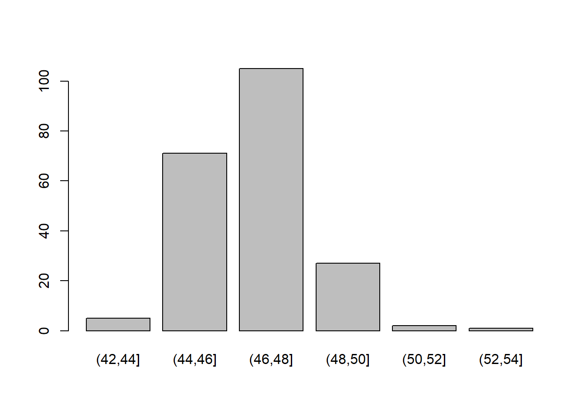
La función de histograma hist(), que pertenece al conjunto de funciones básicas de \(R\) hace lo mismo en una sola instrucción:
hist(df$est)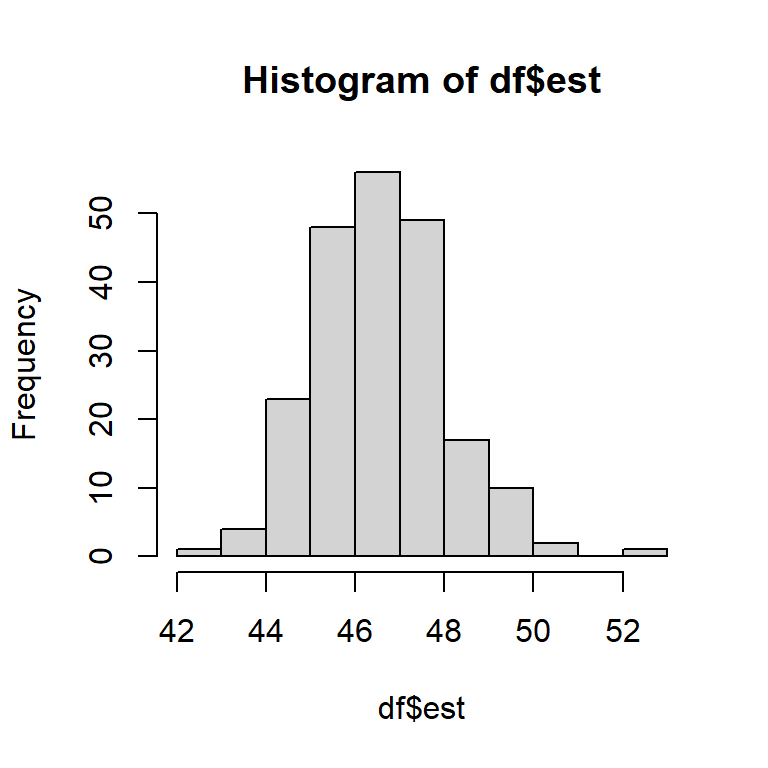
Si quisiéramos hacer exactamente el mismo histograma que habíamos hecho previamente, agrupando los valores de 2 en 2, la función nos permite modificar el intervalo; en este caso modificamos el número de bins utilizando la opción breaks:
hist(df$est, breaks = 5)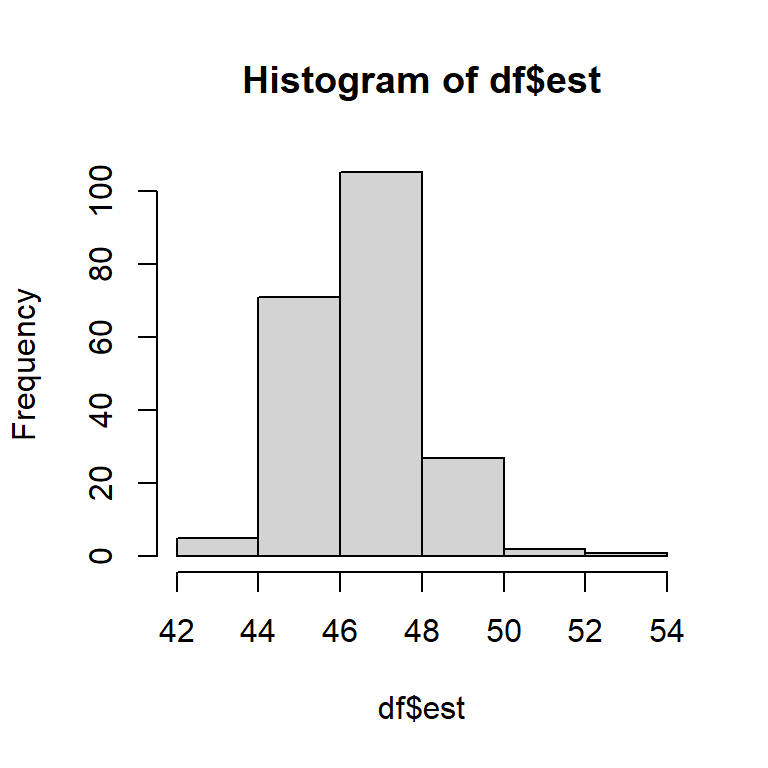
Puedes leer más sobre la creación de histogramas simples aquí, y practicar la función hist() para crear histogramas en esta página de Datacamp
En este ejemplo detallado hemos visto cómo las funciones de R permiten automatizar los pasos que haríamos en un proceso manual para dar el resultado de forma sencilla y directa. A partir de ahora utilizaremos las funciones sin explicar sus pasos intermedios, aunque incluiremos siempre un enlace con la descripción de la función.
La distribución de los datos.
Antes de calcular las medidas de tendencia central y dispersión, veamos lo que queremos decir con distribución
Las distribuciones de frecuencias que encontramos en el mundo real pueden representarse mediante modelos matemáticos que se construyen mediante funciones estadísticas. Según el tipo de proceso, la distribución de frecuencias que observamos puede ser descrita con un modelo u otro, modelo que podemos escoger de la forma que más nos interese.
par(mfrow=c(1,2))
hist(df$est, breaks = 5)
hist(df$coliformes, breaks = 5)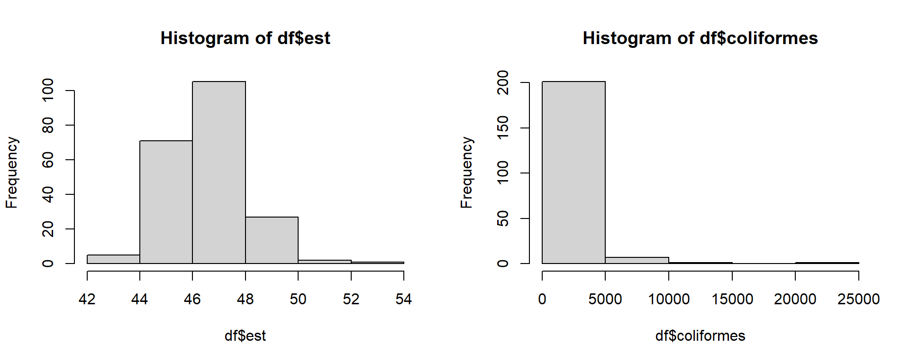
par(mfrow=c(1,1)) En nuestro caso, vemos que el extracto seco total se distribuye de manera más o menos simétrica alrededor de un valor central, mientras que la distribución de los recuentos de coliformes es totalmete asimétrica: la gran mayoría de casos el valor es cero, y sólo algunos casos tienen valores positivos, que en ocasiones son muy altos.
La distribución de frecuencias más común que es simétrica alrededor de un valor central se suele representar mediante un modelo estadístico que conocemos como distribución normal o curva de Gauss (el matemático que la describió), modelo al que se ajustan muchos procesos naturales. La frecuencia de positivos en un análisis microbiológico en cambio no puede ajustarse a este modelo, sino a otro que se conoce como distribución de Poisson.
Cada tipo de distribución de probabilidad está caracterizada por un parámetro o parámetros propios. La distribución normal está caracterizada por dos parámetros, la media \(\mu\) y la varianza \(\sigma^{2}\). La distribución de Poisson está caracterizada por el parámetro \(lambda \text{ }\lambda\)
Esto quiere decir que no podemos utilizar para describir una distribución los parámetros de otra distribución distinta. Por eso no tiene sentido estadístico, y constituye un error, hablar de la media de los recuentos bacterianos de un periodo, ya que la distribución de los recuentos bacterianos no se ajusta a una distribución normal. Hablaremos de este punto importante más adelante.
Muchas de las distribuciones de probabilidad pueden aproximarse a la distribución normal cuando el tamaño muestral es igual o superior a 30, según indica el teorema del límite central.No obstante, dado que esto no siempre se cumple, es necesario ser cuidadoso con el uso de los estadísticos descriptivos de una distribución. En muchas ocasiones, una transformación de los datos ayuda a normalizar una distribución; en la mayoría de las ocasiones, es más sencillo y menos propenso a error utilizar métodos no paramétricos que no están basados en la suposición de normalidad de los datos.
Tendencia central
Habitualmente explicamos “tendencia central” como “lo que ocurre más usualmente” Por ejemplo, en el caso de la distribución de frecuencias del extracto seco, hemos visto con el diagrama de tallo y hojas que los valores que ocurren más frecuentemente están entre 45 y 49.
Si pudiésemos disponer de una medida única, un sólo valor, que refleje “lo que ocurre normalmente”, este valor nos permitiría compararlo con otros datos observados y de alguna manera comparar los conjuntos de datos entre sí.
Las medidas de tendencia central más utilizadas son la media y la mediana.
La media es la suma de los datos observados dividida entre el número de datos. Como hemos visto, es uno de los dos parámetros que describen la distribución normal.
La mediana es el punto medio (o la media de los dos puntos centrales cuando el número de datos es par) cuando todos los datos están ordenados de mayor a menor.
La moda es el valor más frecuente (que ocurre más veces) en el conjunto de datos. No es un estadístico muy utilizado en los entornos de producción industrial, por lo que simplemente lo citamos y no le daremos más uso.
Ejemplo de cálculo de la media y la mediana
Seleccionamos los 5 primeros valores de \(est\) de nuestro conjunto de datos, con los que haremos manualmente los cálculos de manera sencilla:
x<- df$est[1:5]
x[1] 46.68 48.09 45.97 46.24 45.81La media de una población (completa) se designa mediante la letra griega mu: \(\mu\) y se conoce como media poblacional. En el caso de la media de una muestra, la media se designa mediante una \(x\) con una barra encima: \(\overline{x}\)
El cálculo de la media de un conjunto de números consiste simplemente en sumar los valores y dividirlos entre el número de los mismos: \[ \overline{x} = \frac{\sum_1^{n}x}{n} \] El signo \(\sum_1^{n}\) significa que sumamos todo lo que sigue desde el primer valor hasta el último. En nuestro caso, \(\sum_1^{n}x=\) 232.79 y \(n=\) 5, por lo que la media de nuestros 5 valores es \(\overline{x}=\) 46.56
De la misma forma, calculamos la mediana como el valor de la variable con posición central en un conjunto de datos ordenados; para nuestros 5 valores, \(Mediana=\) 46.24.
\(R\) nos permite hallar estos valores con facilidad para una columna de nuestro data frame, en este caso 211 valores, mediante las funciones estándar mean() y median():
mean(df$est)[1] 46.6372median(df$est)[1] 46.6Distribución
Ya tenemos una medida de tendencia central de nuestro conjunto de datos (usemos la media por el momento). En nuestro conjunto de datos de extracto seco total, \(est\), la media es 46.64
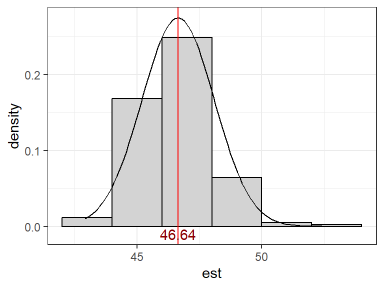
¿Cómo describimos de qué forma el resto de datos se agrupan alrededor de este valor central? A continuación hemos representado diferentes distribuciones de frecuencia que tienen diferente aspecto frente a su valor central. ¿Cómo podemos describir estos datos?
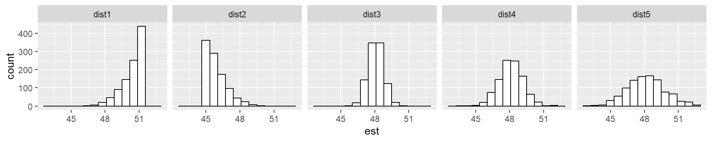
Existen diferentes estadísticos que describen si una distribución se inclina a la derecha o a la izquierda, si es estrecha y alta o ancha y baja, etc. Las medidas que nos ayudan a explicar la amplitud de la distribución se conocen como medidas de dispersión
Dispersión
Los siguientes estadísticos son utilizados para cuantificar la dispersión de los datos respecto al centro de los mismos. Utiizaremos principalmente tres:
- Rango o recorrido: la diferencia entre el mayor y el menor valor de la muestra
- Varianza: una medida acumulada de la distancia de cada punto individual a la media. Es una medida paramétrica
- Rango intercuartil, que veremos más tarde al hablar de los diagramas de caja. Es una medida no paramétrica.
Cuando analizamos el total de una población, cuya distribución suponemos que se corresponde con una distribucón normal, la varianza se calcula con la fórmula siguiente:
\[ \sigma^{2} = \frac{1}{n} \sum_1^{n} (x - \mu)^{2} \] donde:
\(\sigma^{2}=\) varianza
\(x=\) los valores individuales de la muestra
\(n=\) el número de valores en la muestra
\(\mu=\) media
y \(\sum\) significa que sumamos todo lo que sigue, prestando atención a los paréntesis
Cuando calculamos la varianza de una muestra, mucho más pequeña que el total de la población, se usa \((n-1)\) como divisor en vez de \(n\), por razones estadísticas que están fuera del alcance de este documento, y que pueden consultarse aquí. En este caso, no usamos \(\sigma^{2}\) para representar la varianza, sino \(s^{2}\), que es demonimada varianza muestral
\[ s^{2} = \frac{1}{n-1} \sum_1^{n} (x - \mu)^{2} \]
La desviación estándar o desviación típica es en cierta manera un valor medio de desviación respecto a la media. La desviación típica se calcula como la raíz cuadrada de la varianza:
\[ \sigma = \sqrt{\frac{1}{n} \sum_1^{n} (x - \mu)^{2}} \]
donde:
\(\sigma=\) desviación típica
\(x=\) los valores individuales de la muestra
\(n=\) el número de valores en la muestra
\(\mu=\) media
y \(\sum\) significa que sumamos todo lo que sigue, prestando atención a los paréntesis
Dado que la desviación típica se calcula como la raíz cuadrada de la varianza, cuando calculamos la desviación típica de una muestra mucho más pequeña que el total de la población, heredamos de la varianza el divisor por \((n-1)\) en vez de \(n\), por las razones indicadas anteriormente. La desviación típica muestral se representa como \(s\)
\[ s = \sqrt{\frac{1}{n-1} \sum_1^{n} (x - \mu)^{2}} \]
Gracias a \(R\) podemos olvidarnos de la complejidad de estas fórmulas, ya que incluye funciones para los cálculos de estos estadísticos: var() para el cálculo de la varianza, y sd() para el cálculo de la desviación típica:
var(df$est)[1] 2.109695sd(df$est)[1] 1.452479La media \(\mu\) y la varianza \(\sigma^{2}\) definen la distribución normal correspondiente. Esto se indica en estadística mediante la expresión \(X \sim N(\mu, \sigma^{2})\), lo que quiere decir, simplemente, que nuestros valores pertenecen a una distribución normal definida por esos dos parámetros.
No vamos a indicar aquí la fórmula de la función de distribución de la distribución normal ni el cálculo de probabilidades, que pueden consultarse aquí. Sólo indicaremos que el área que delimita la curva nos indica la probabilidad de un determinado valor en esa distribución \(X \sim N(\mu, \sigma^{2})\), o, igualmente, de que un valor sea igual, mayor o menor que un valor dado. Tanto las hojas de cálculo actuales como \(R\) tienen fórmulas para calcular estas probabilidades, y puede resultar útil su aprendizaje.
En todo caso, aquí nos quedaremos con saber que la curva normal nos permite calcular la probabilidad de ocurrencia de los valores que podemos encontrarnos en nuestra distribución. Dicho de otra manera, la probabiildad de que un valor al azar proveniente de una distribución \(X \sim N(\mu, \sigma^{2})\) esté dentro del intervalo \(\mu\pm\ \sigma\) es de \(0,682\), o lo que es lo mismo desde un punto de vista práctico, del \(68,2\%\), así sucesivamente para todos los intervalos de 2 o 3 \(\sigma\). Resumiendo,
- en el intervalo \(\mu\pm1\text{ }\sigma\) encontraremos el \(68,2\%\) de los datos
- en el intervalo \(\mu\pm2\text{ }\sigma\) encontraremos el \(95,4\%\) de los datos
- en el intervalo \(\mu\pm3\text{ }\sigma\) encontraremos el \(99,6\%\) de los datos
lo se indica de forma gráfica en la siguiente figura:

Estos valores son la base de la construcción de los gráficos de control estadístico de procesos, y de la metodología Seis Sigma. Otro ejemplo es la ley de contenido efectivo RD 1801/2008, que hace uso del cálculo de probabilidades basado en la distribución normal.
El diagrama de caja o boxplot
Hemos visto que la utilización de la media y la desviación típica como descriptores de una distribución normal supone que la distribución de nuestros datos puede ajustarse a una distribución normal. Hemos visto también que algunas distribuciones de valores, como los análisis microbiológicos de coliformes, no siguen esta distribución sino que son fuertemente asimétricos, por lo que en este caso no podemos utilizar la media y la desviación típica para describir nuestros resultados analíticos.
Existen otros métodos muy útiles para analizar estas distribuciones de datos, que por extensión pueden aplicarse a todas las distribuciones de datos, uno de los más usados es el diagrama de caja o boxplot. Consiste en un gráfico que se construye a partir de los llamados cuartiles:
- el primer cuartil, o \(Q_{1}\) se calcula como la mediana de los \(\frac{n}{2}\) números más bajos de nuestro conjunto ordenado de datos
- el segundo cuartil,o \(Q_{2}\) se calcula como la mediana del conjunto de datos
- el tercer cuartil, o \(Q_{3}\) se calcula como la mediana de los \(\frac{n}{2}\) números más altos de nuestro conjunto ordenado de datos
La anchura de la caja se calcula como la distancia entre los cuartiles 1 y 3. Representa el 50% de la distribución y se conoce como rango intercuartil,
\[ IQR=Q_{3}-Q_{1} \] El rango intercuartil es una medida de dispersión no paramétrica, muy útil en muchas ocasiones cuando no conocemos la distribución de los datos o sabemos que no se ajustan a una distribución normal y por lo tanto no podemos utilizar la desviación típica como medida de dispersión.
La mediana se representa casi siempre con una línea horizontal en su posición correspondiente dentro de la caja, entre los cuartiles \(Q_{1}\) y \(Q_{3}\). Hay diferentes modelos de representación gráfica de diagramas de caja, algunos de ellos utilizan puntos u otros símbolos para la pòsición de la mediana.
Finalmente, los extremos del diagrama de caja se calculan como \(Q_{3}+IQR*1,5\) para la “rama” alta, y \(Q_{1}-IQR*1,5\) para la “rama” baja. En caso de que no haya ningún valor en nuestros datos tan alto o bajo como resulta del cálculo, simplemente se toma como extremo de la “rama” el máximo o el mínimo de los datos, respectivamente. Esto quiere decir que es posible que las ramas sean asimétricas (de diferente longitud), lo cual es relativamente habitual en distribuciones no simétricas.
Si hay algún valor que esté más lejos que los límites que hemos calculado para las “ramas”, se representan como puntos aislados, para indicar que son valores extremos que pueden ser anómalos.
A continuación vemos el diagrama de caja comparando sus elementos con los de la distribución normal:

Como vemos, la anchura de la caja es el rango intercuartil \(IQR\), de forma que en un solo gráfico tenemos una descripción de la distribución bien detallada y que podemos evaluar visualmente: un valor central (mediana), un valor de dispersión (\(IQR\)), los límites extremos de los datos y, como veremos, los posibles valores anómalos (outliers)
El conjunto de los tres cuartiles más el mínimo y máximo de los datos se conoce como resumen de cinco números. \(R\) tiene dos funciones que nos muestran estos números: fivenum() y summary()
fivenum(df$est)[1] 42.920 45.615 46.600 47.470 52.610summary(df$est) Min. 1st Qu. Median Mean 3rd Qu. Max.
42.92 45.62 46.60 46.64 47.47 52.61 Utilidad del diagrama de caja
Una de las grandes ventajas del diagrama de caja es que puede ser fácilmente utilizado para comparar distribuciones. Antes hemos visto el aspecto que pueden tomar diferentes distribuciones, recordemos los histogramas:
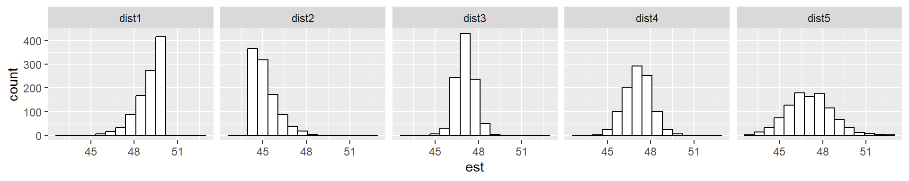
Los diagramas de caja para estas distribuciones nos permiten una visualización lado a lado de todas ellas de forma mucho más clara, incluyendo valores centrales y dispersión:
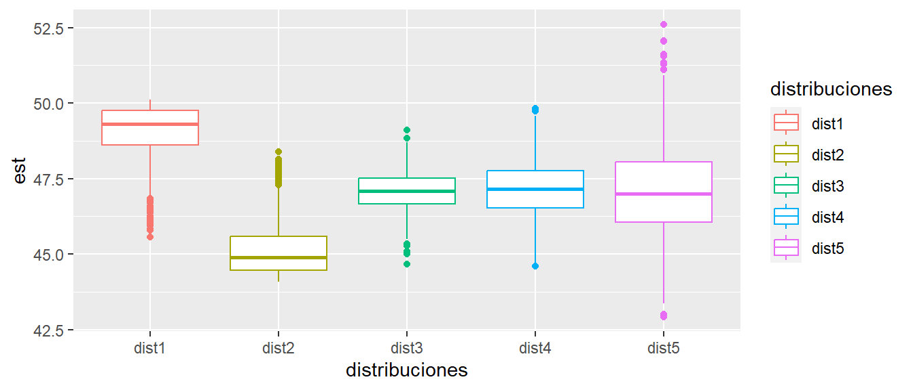
El diagrama de caja es una herramienta fundamental en el análisis descriptivo de datos. Puede utilizarse para describir un conjunto de datos, o para subdividir un conjunto de datos en función de otra variable, como el tiempo o cualquier otro factor que forme parte de nuestra tabla de datos y podamos usar para clasificarlos.
Veamos el uso del boxplot para representar nuestros valores mensuales de extracto seco total \(est\), clasificados por meses:
library(lubridate)
ggplot(df, aes(x=factor(month(fecha)), y = est)) +
geom_boxplot() +
xlab("Mes")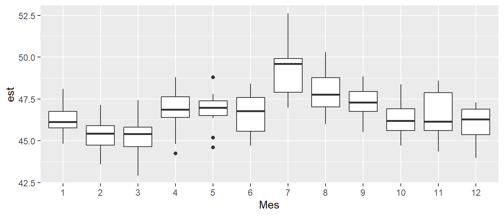
El diagrama de caja nos permite ver nuestro conjunto de datos con detalle adicional. Añade, además, una información muy útil: los puntos aislados que aparecen fuera del diagrama de caja son posibles valores anormales.
- En febrero y marzo la mediana del \(est\) ha sido la más baja del año. ¿Se ha debido a una decisión voluntaria o ha habido una deriva de fabricación?
- Parece que en julio, agosto y noviembre, la variabilidad de nuestros resultados ha sido mayor que en otros meses. ¿Quizás hemos sustituido personal experto por personal menos formado, debido a las vacaciones?
- En abril y mayo parece que ha habido algunas fabricaciones que han tenido valores que se han apartado anormalmente de lo que ha sucedido en el conjunto del mes. Debemos indagar para saber si ha habido algún accidente de fabricación o cualquier otra cosa que explique estos valores anormales.
De esta manera, una representación gráfica sencilla nos ayuda a entender nuestros datos, y esto nos facilita el enfocarnos en la búsqueda de las causas de dispersión en estos casos concretos. Veremos este aspecto con más detalle al hablar de los gráficos de control y las causas de variación.
Representación de los valores en el tiempo
Hasta ahora hemos analizado un conjunto de datos de forma estática, examinando su distribución y definiendo el conjunto en base a determinadas medidas centrales y de dispersión. Hemos visto medidas que llamamos paramétricas, porque constituyen los parámetros de una distribución, en este caso la distribución normal o campana o curva de Gauss. Hemos visto también medidas no paramétricas, como la mediana. que no presuponen ningún modelo de distribución de los datos. Nuestra última gráfica de diagramas de caja a lo largo de los meses nos ayuda a introducir una dimensión adicional en nuestra tabla de datos, muy importante en el seguimiento de los procesos productivos: el tiempo.
La función plot()nos permite representar un solo valor plot(x) o un valor \(y\) frente a un valor \(x\) mediante plot(x,y). Si en el valor \(x\) utilizamos nuestra columna de \(fecha\), podemos ver cómo ha evolucionado el \(est\) a lo largo del tiempo. Como otras funciones \(R\), podemos representar nuestra gráfica de diferentes formas; la opción por defecto representa sólo los puntos, pero podemos representar también líneas o puntos unidos por líneas (para representar lado a lado las dos opciones, dividimos la pantalla en dos y luego recuperamos el formato único con la función par()):
par(mfrow=c(1,2))
plot(df$fecha, df$est)
plot(df$fecha, df$est, type = "l")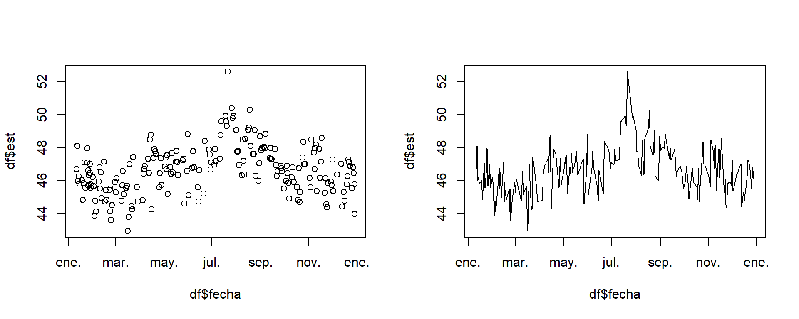
par(mfrow=c(1,1)) Como alternativa, podemos usar la funcion ggplot() de la biblioteca tidyverse ggplot2Esta biblioteca, una de las más usadas en R y una referencia en el lenguaje de construcción de gráficos, nos da una gran versatilidad en la construcción de nuestros gráficos. En este caso, como ejemplo, añadimos una línea de tendencia a la línea original:
df |>
ggplot(aes(x = fecha, y = est)) +
geom_line() +
geom_point() +
stat_smooth(se = FALSE, span = 0.2)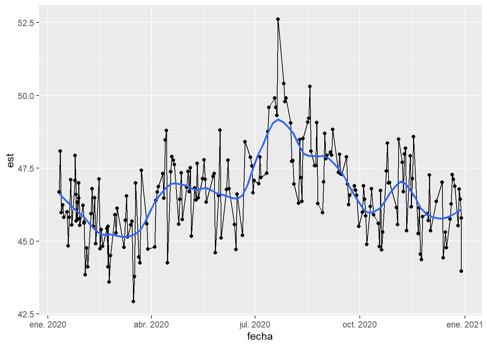
Dejamos a la práctica posterior la comprensión detallada de esta funcíón y sus opciones, especialmente de la opción spandentro de la curva suavizada de tendencia.
De los gráficos de series temporales a los gráficos de control
Las gráficas temporales anteriores nos muestran que nuestros valores de \(est\) no han sido constantes a lo largo del año, sino que ha habido variaciones mensuales. Hemos tenido una primera visualización al examinar los diagramas de caja por meses, y el gráfico temporal de líneas nos ha dado más precisión en la observación de las variaciones diarias y estacionales.
Ahora sabemos que si nuestros datos se ajustan aproximadamente a una distribución normal, lo normal sería que, tal como hemos visto, el \(99,6\%\) de los datos estuviese dentro de los limites de \(\overline{x}\pm3 s\), y que el %95,4%$ de los datos deben estar en el intervalo de \(\overline{x}\pm2 s\).
Esta es la base de la construcción de los gráficos de control, que son una herramienta fundamental en el control de los procesos industriales, y también de cualquier proceso que tenga lugar en el tiempo y esté sometido a variación.
\(R\) tiene algunas bibliotecas muy potentes para construir gráficos de control, las más usadas son qcc, cuyo contenido y uso puede verse aquí y qicharts2, cuyo contenido y uso puede verse aquí. A modo de ejemplo, veamos dos gráficos de control con cada una de las librerías.
Para construir nuestro gráfico de control con qcc necesitamos proporcionar grupos de valores que representen periodos homogéneos. Para ello, agruparemos las fechas por semanas, y haremos nuestro gráfico de control en base a los promedios y variabilidad semanal.
library(qcc)
library(lubridate)
est.semanal <- qcc.groups(df$est, week(df$fecha))
qcc(est.semanal, type = "xbar")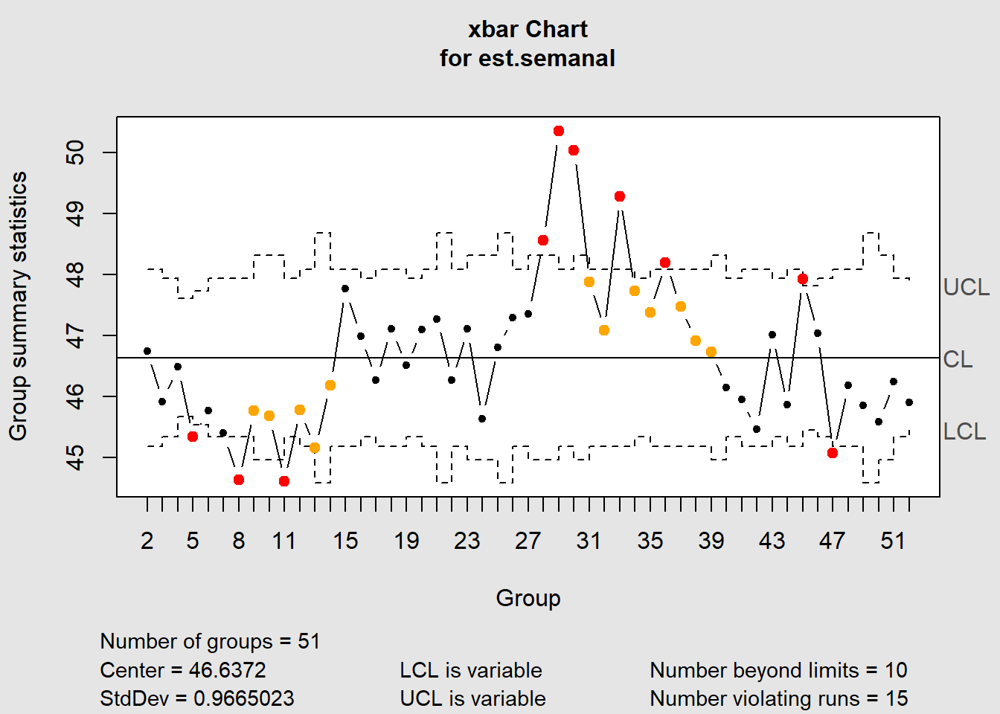
qcc(est.semanal, type = "S")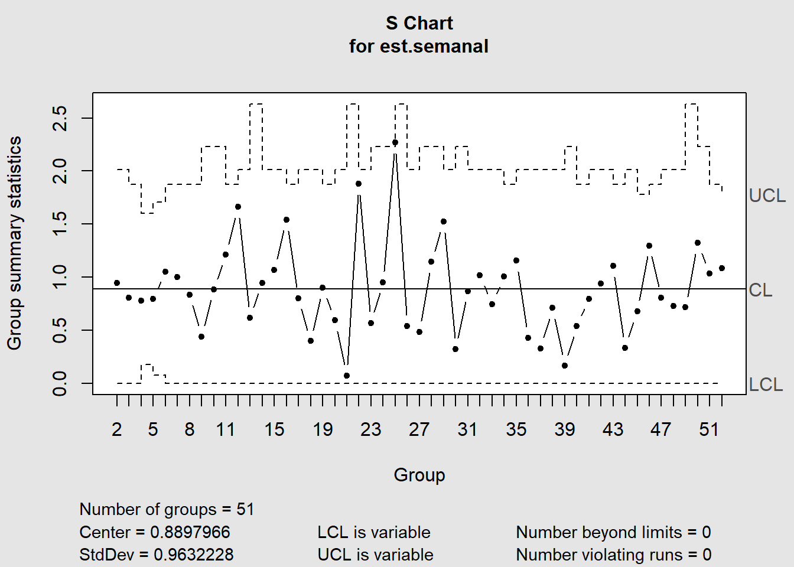
Hemos generado dos salidas, un gráfico de valores medios semanales y un gráfico de desviaciones típicas. Teniendo en cuenta que algunas semanas hemos fabricado sólo dos días, el número resulta demasiado bajo para que las desviaciones típicas sean significativas, pero dado que estamos trabajando a modo de ejemplo, podemos aceptarlo. Una alternativa en casos como éste sería utilizar como gráfico de variabilidad el de rangos type = "R"
La funcín qcc()nos marca en rojo en el gráfico de medias los valores que se escapan del límite de control de \(\pm3\text{ }s\), lo que nos alerta de cambios en el proceso en estos valores. Hay que indicar, no obstante, que las gráficas de control sólo son aplicables en el caso de procesos estables, es decir, que no muestran tendencias subyacentes; en nuestro caso vamos a suponer un proceso estable, ya que, aunque ha habido una variación en algunos meses, el proceso ha vuelto a sus valores medios. No parece tanto un problema de deriva o tendencia sino de falta de control del proceso en algunos meses, o bien alguna otra explicación que podamos encontrar.
Sin embargo la variabilidad semanal ha estado dentro de los límites de control aceptables; a pesar de que nuestros diagramas de caja detectaban un aumento de la variabilidad en algunos meses de verano, el gráfico de control no considera este aumento como suficiente para decir que el proceso esté fuera de control.
La librería qcctiene otras funciones muy útiles, como la función process.capability() que calcula la capacidad del proceso; aquí no entraremos en más detalles, pero puede resultar muy interesante revisar el manual de la función aquí
Otra biblioteca muy potente y quizás más sencilla de usar es qicharts2 Esta biblioteca utiliza como única funcion qic(), y está basada en ggplot2, por lo que es muy extensible con opciones estándar de esta biblioteca.
Veamos dos opciones sencillas, una con los valores individuales, y la segunda agrupando los valores semanlmente, tal como hemos hecho en qcc
library(qicharts2)
qic(fecha,est, data = df)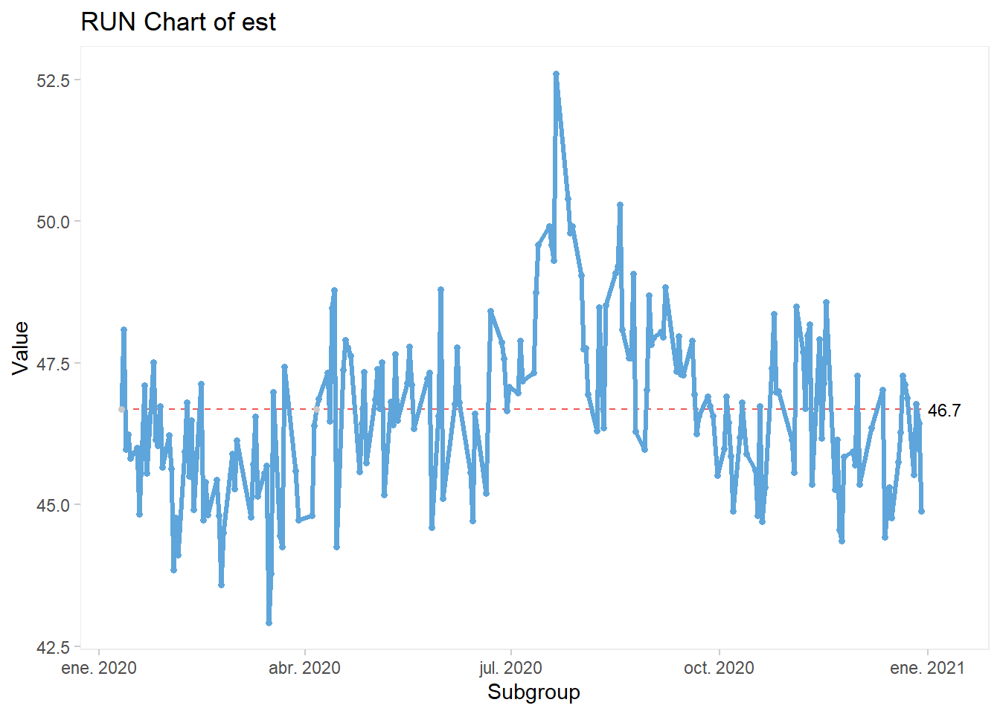
Aquí utilizaremos la función cut() para lograr la agrupación por semanas, ya que se adapta mejor a la función y presenta las fechas correctamente.
qic(as.Date(cut(fecha, breaks = "week")),
est,
data = df,
chart = "xbar",
xlab= "Mes")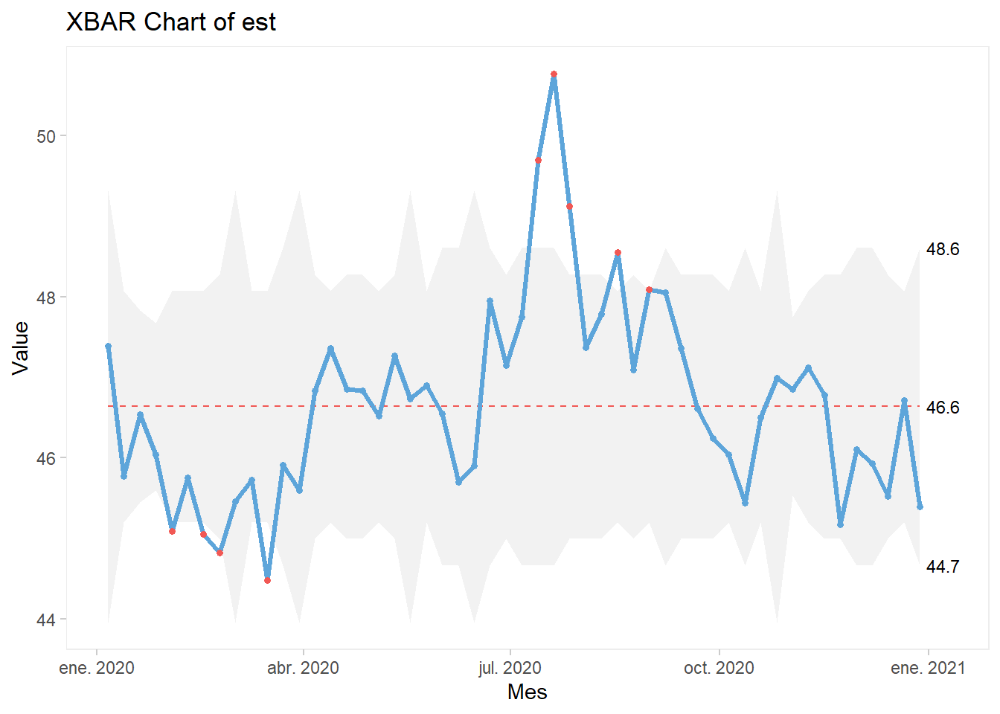
qic(as.Date(cut(fecha, breaks = "week")),
est,
data = df,
chart = "s",
xlab= "Mes")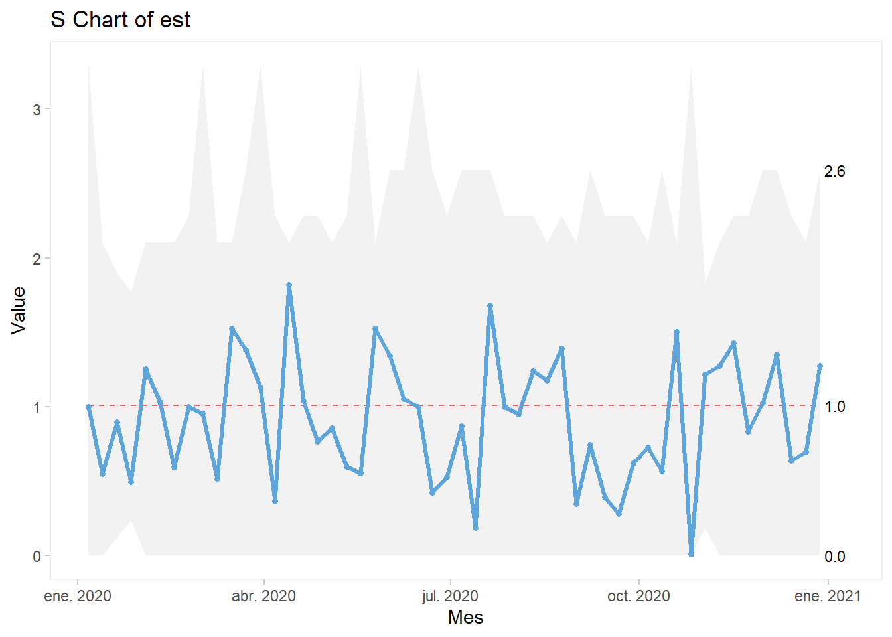
De forma similar a qcc(), la gráfica nos presenta en rojo las fechas en las que los valores se han salido de los límites de control, indicando que el proceso no ha sido estable.
Podemos hacer fácilmente una gráfica basada en los valores mensuales, sólo con cambiar el criterio de agrupación de semanas a meses. Esta es la gran ventaja de usar una columna de fechas estándar.
qic(as.Date(cut(fecha, breaks = "month")),
est,
data = df,
chart = "xbar",
xlab= "Mes")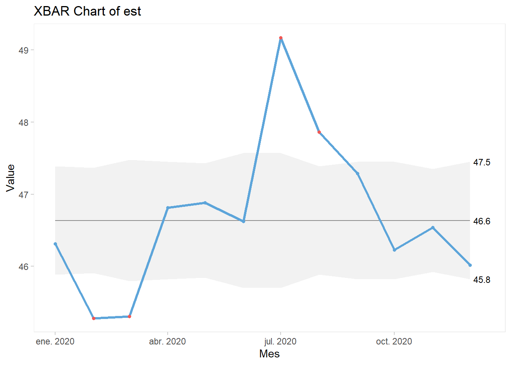
qic(as.Date(cut(fecha, breaks = "month")),
est,
data = df,
chart = "s",
xlab= "Mes") 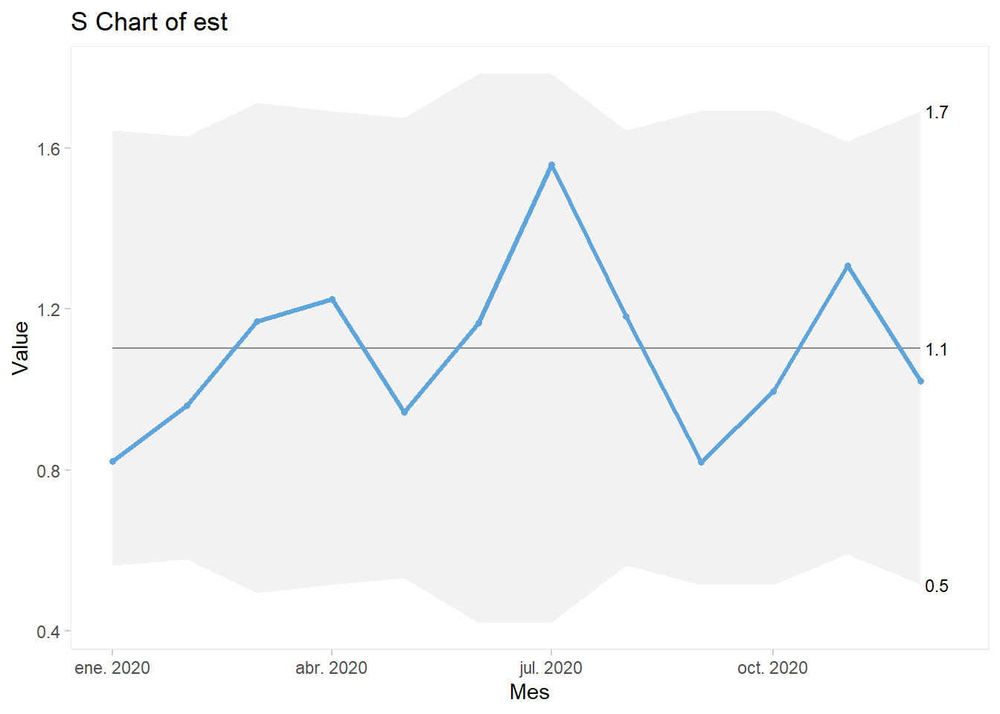
El análisis de la variación mediante gráficos de control es una herramienta clave en la reducción de la variabilidad industrial y la mejora de procesos. Recomendamos profundizar tanto en la teoría como en la práctica, utilizando las funciones indicadas de \(R\) que proporcionan herramientas potentes y suficientes para emplear estas herramientsa con éxito.
Resumen
En este documento se han presentado algunas técnicas básicas para almacenar datos de producción y para su análisis visual y detallado, análisis que debe llevar a un mejor conocimiento del proceso productivo y a la mejora de las decisiones para reducir su variabiidad, lo que es siempre (o debe ser) una prioridad en el pilotaje de un proceso productivo. Pero el conocimiento y dominio de las técnicas expuestas sólo se logra mediante la práctica. Por lo tanto, animamos a implantar estas herramientas en los grupos de mejora y a procurar la formación necesaria para cu comprensión y dominio.
Herramientas básicas estudiadas:
- Histogramas
- Distribución normal, media, varianza y desviación típica
- Otras distribuciones
- Diagramas de caja
- Gráficos de series temporales
- Gráficos de control
Bibliotecas R utilizadas:
tidyversepara el análisis generalreadxlpara leer la tabla de datos directamente de Excel (dentro detidyverse)ggplot2para realizar gráficos (dentro detidyverse)scalespara escalar las distribucioneslubridatepara calcular funciones de tiempo sobre la columna fecha, tales comomonth()(dentro detidyverse)qccpara los gráficos de controlqicharts2para los gráficos de control